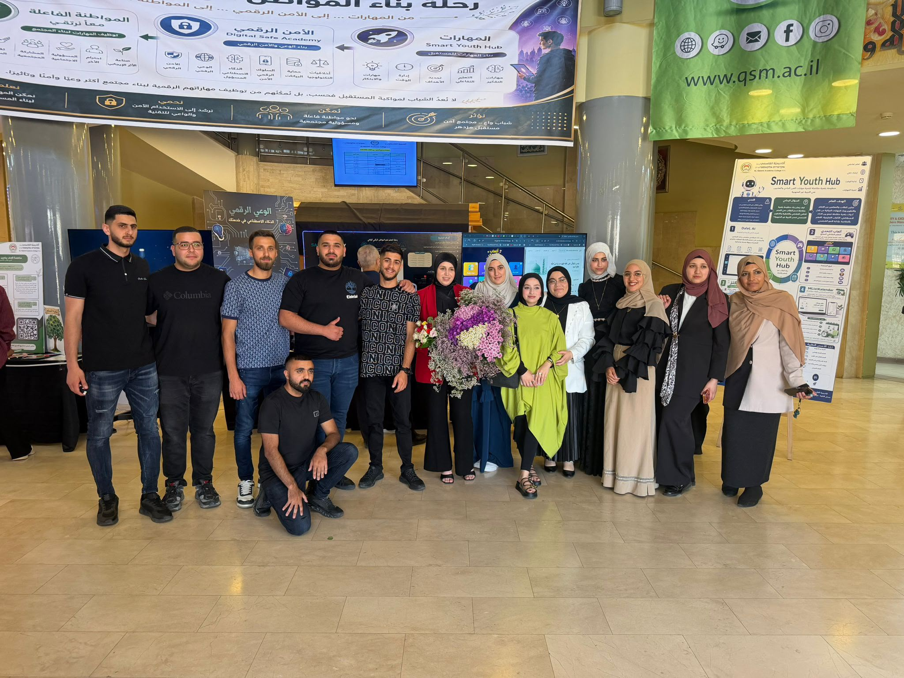

الدكتورة دعاء مقاري
أتقدم بجزيل الشكر والتقدير إلى مرشدتي الأكاديمية الدكتورة دعاء مقاري على دعمها المستمر، وتفهمها، ومرافقتها لنا خلال مسار التدريب الميداني، وما قدمته من توجيهات قيّمة ساهمت في تطوير أدائنا وتعزيز خبراتنا التربوية والمهنية.
ورغم بعض التحديات التي واجهتنا في البداية، إلا أن التجربة بشكل عام كانت ناجحة ومثمرة، وقد ساعدت على بناء بيئة تعلم إيجابية مليئة بالتعاون والتطور.
كما أود التعبير عن امتناني العميق لكل ما قدمته لنا من دعم وتشجيع ومتابعة خلال اللقاءات المختلفة، والتي كان لها أثر كبير في نجاح هذه التجربة وتطورنا المهني والأكاديمي.
وفي الختام، أعبّر عن خالص تقديري وامتناني لما قدمته من إرشاد وتوجيه كان له دور أساسي في إنجاح هذا المسار التدريبي.